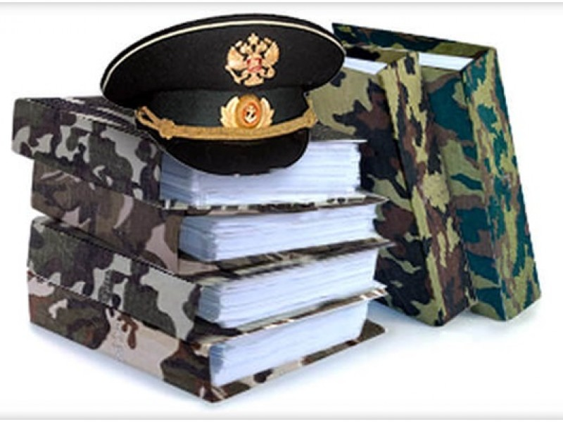
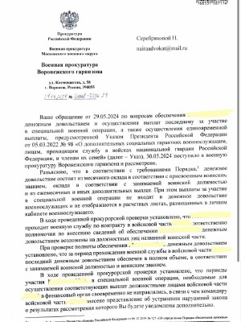
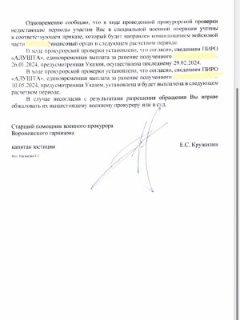

Адвокаты для военнослужащих.

- Отдельной категорией граждан являются - военнослужащие. Деятельность военнослужащих регулируется специальным Законом РФ - ФЗ «О статусе военнослужащих» и иными подзаконными актами. Для того, что бы успешно защищать права и законные интересы военнослужащих, необходимы глубокие знания законодательства о военнослужащих и практический опыт в разрешении споров с военнослужащими, для чего необходим именно юрист по военным делам и спорам.
- Наши военные адвокаты, имеют значительный опыт ведения дел, связанных со спорами с военнослужащими. Наш адвокат по военным делам - это, во-первых, опытный юрист, располагающий накопленным багажом знаний и практикой по спорам с военнослужащими, во-вторых, это квалифицированный военный адвокат по уголовным делам, имеющий специальные познания и практику в военных судах по уголовным делам в отношении военнослужащих.
Какую помощь оказывает военный юрист:
- Письменное и устное консультирование в области военного права;
- Изучение предоставленных материалов по делу и дача консультаций;
- Работа по досудебному урегулированию спора;
- Подготовка и подача жалоб и заявлений в суды и военные прокуратуры;
- Защита военнослужащего на стадии предварительного следствия;
- Защита интересов военнослужащего в суде;
- Подготовка материалов для снятия судимостей, УДО и т. д.
Консультация военного юриста
(платная)
(платная)
На нашем телеграмм канале @KAsheriev можно найти много полезной информации
Военные адвокаты и юристы ведут следующие дела:
Преимущества наших военных юристов
Наши военные специалисты имеют статус адвоката, что подразумевает их повышенную квалификацию и ответственность.
Наши адвокаты имеют обширный опыт сопровождения военных проблематик и кейсов
Запросы адвоката в военные прокуратуры и воинские части обязательны для исполнения, ввиду особого статуса.
Полезные страницы по военной тематике
Уведомление в Госуслуги о военном учете ...
Мобилизация. Порядок и условия ...
Право на отсрочку от призыва по мобилизации (статья в СМИ) ...
Основания увольнения с военной службы ...
Принятие ГД новых поправок в УК РФ о военном положении и военном времени ...
Военный билет вместо справки ...
Что грозит за неявку на военные сборы ...
Как оспорить решение призывной комиссии...
Оспорить решение ВВК ...
Невыплата денежного довольствия ...
Рапорт на отпуск военнослужащему...
Основания увольнения с военной службы ...
Порядок увольнения в связи с ОШМ...
Консультация военного адвоката
(платная)
(платная)
Направить заявку на WhatsApp
Стоимость юридической помощи военного адвоката:
Кто имеет право на бесплатную юридическую помощь ? Подробнее ...
Практика наших военных адвокатов.
Военнослужащий уволен с военной службы в врезультате проведения ВВК.
В течении года адвокаты добивались проведения ВВК военнослужащему. Направлялись жалобы и запросы, собирались материалы. В результате, военнослужащий был направлен на ВВК по результатам которого было вынесено заключение о признании его негодным к военной службе с назначением категории "Д" и освобождением от военной службы до увольнения.

Спор о праве на получение жилья.
По результатам рассмотрения дела судом первой инстанции было отказано в удовлетворении административного иска об оспаривании действий начальника 1 отдела ФГКУ "ЗРУЖО" МО РФ, связанных с отказом во включении в списки на предоставление служебных жилых помещений.Решение было оспорено.
Cуд второй инстанции, рассмотрев апелляционную жалобу представителя, решение суда первой инстанции отменил и принял новое решение, которым решение начальника 1 отдела ФГКУ "ЗРУЖО" МО РФ об отказе во включении истца в список на предоставление служебных жилых помещений отменил. На основании данного апелляционного определения военнослужащий был включен в указанный список.
Уголовное дело по нарушению уставных правил - ст. 335 УК.
В Коллегию обратился доверитель привлекаемый к уголвоной ответственности за неуставные взаимоотношения с подчиненными. На начальном этапе предварителнього следствия возник вопрос об изврании меры пречечения обвиняемому. Защитнику удалось отстоять инетресы военнослужащего и сбособствовать избранию меры пресечения, не связанной с изоляцией.
При рассмотрении уголовного дела в Гарнизонном военном суде защитнику удалось добиться примирения с потерпевшим и вынесения для своего подзащитного наказания не связанного с реальным лишением свободы, в виде условного осуждения, с учетом характеризующих его данных.
Адвокаты добились назначения военной выплаты военнослужащему.
Длительное время военнослужащему отказывали в установлении и начислений за военную службу в установленном Законом размере и порядке. В результате жалоб в Военную прокуратуру, требования были удовлетворены.
Ответ прокуратуры на жалобу адвоката о невыплате довольствий




Практика по выдаче военного билета. Перейти....
Полезные страницы по военной тематике
Уведомление в Госуслуги о военном учете ...
Мобилизация. Порядок и условия ...
Право на отсрочку от призыва по мобилизации ...
Основания увольнения с военной службы ...
Принятие ГД новых поправок в УК РФ о военном положении и военном времени ...
Военный билет вместо справки ...
Что грозит за неявку на военные сборы ...
Как оспорить решение призывной комиссии...
Невыплата денежного довольствия ...
Рапорт на отпуск военнослужащему...
Основания увольнения с военной службы ...
Порядок увольнения в связи с ОШМ...
Меры соцподдержки участникам СВО...
Освобождение от военной службы в связи с гибелью родственника...
Обзор прав и льгот для участников СВО ...
Интересная информация по военной тематике
Какие выплаты пологаются при военном увечье?
Государство оказывает всестороннюю поддержку бойцам, получившим ранения в ходе специальной военной операции. Потеря ступни — это тяжёлое увечье, которое даёт право на значительные единовременные и ежемесячные выплаты.
Если боец признан негодным к службе (категория «Д»), ему положен комплекс мер поддержки. Давай разберём их по порядку.
1. Единовременная выплата за ранение. За тяжёлое ранение, полученное в ходе СВО, выплачивается 3 миллиона рублей. Поскольку потеря стопы относится к тяжёлым увечьям согласно постановлению Правительства РФ, эта сумма будет назначена.
2. Выплата при установлении инвалидности. После того как военно-врачебная комиссия установит связь между ранением и инвалидностью, будет произведена дополнительная выплата. Если уже была получена выплата за ранение, то после установления инвалидности доплатят ещё 1 миллион рублей. Таким образом, общая сумма федеральных выплат за само событие составит 4 миллиона рублей.
3. Единовременное пособие при увольнении. Так как увольнение происходит из-за признания негодным к службе вследствие военной травмы, выплачивается крупная сумма. На 2026 год она составляет 3,68 млн рублей.
Ежемесячные компенсации и пенсия
- ежемесячная денежная компенсация: её размер зависит от установленной группы инвалидности. Для инвалидов I группы она составляет около 22 908 рублей, для II группы — 11 454 рубля;
- государственная пенсия по инвалидности: также зависит от группы и начисляется дополнительно;
- выплаты по обязательному государственному страхованию. В случае получения инвалидности во время службы или в течение года после увольнения предусмотрены крупные страховые суммы: например, для I группы инвалидности это более 2,5 миллионов рублей.
Другие меры поддержки
Бойцу также будут предоставлены современные технические средства реабилитации, включая высокотехнологичный протез с микропроцессорным управлением. Кроме того, он имеет право на бесплатное санаторно-курортное лечение и медицинскую реабилитацию.
Для оформления всех этих выплат необходимо обратиться в военкомат по месту жительства или в клиентскую службу Социального фонда России с паспортом, заключением ВВК и документами об участии в СВО. Региональные власти также могут устанавливать дополнительные выплаты, поэтому стоит уточнить информацию в местной администрации.
Суд признал незаконной запись «склонен ко лжи и обману» в военном билете
Волгоградский гарнизонный военный суд удовлетворил иск бывшего военнослужащего, отказавшегося участвовать в СВО.
В его военном билете указали, что он был уволен из рядов ВС РФ «в связи с отказом от выполнения специальных задач на территории ДНР, ЛНР и Украины», а также что он «склонен ко лжи и обману».
Исходя из карточки дела суда, административное исковое заявление поступило в суд 22 августа. 13 октября суд удовлетворил иск частично.
Уклонистам от мобилизации может грозить до 5 лет лишения свободы
С инициативой о привлечении к уголовной ответственности уклонистов от мобилизации выступили представители «Единой России». В качестве наказания предлагают ввести штраф от 200 тыс. до 500 тыс. рублей, принудительные работы или лишение свободы на срок до 5 лет.
Авторы законопроекта пояснили, что поправки направлены на преодоление пробелов в законодательстве.
Так, текущая редакция ст. 328 УК РФ за уклонение от призыва действует только в отношении срочников и не может применяться к уклонистам от мобилизации.
Напомним, что в начале октября стало известно о первом уголовном деле об уклонении от мобилизации по ст. 328 УК РФ, однако через несколько дней прокуратура отменила постановление о возбуждении дела.
Ответственность за уклонение от военной службы и сборов
На днях Владимир Владимирович подписал указ о проведении военных сборов для лиц в запасе. Говорит ли это о возможной подготовке к войне и что будет за уклонение от сборов?
Военные сборы для граждан, находящихся в запасе, - плановое мероприятие по совершенствованию боевой подготовки, которое проводится ежегодно.
Продолжительность военных сборов не может превышать 2 месяца. Все граждане, получившие повестку, обязаны прибыть по месту вызова.
В случае неявки гражданина без уважительных причин военный комиссар принимает все необходимые меры по его призыву и доставке к месту проведения военных сборов. При необходимости для этих целей привлекаются органы внутренних дел.
За неявку по повестке предусмотрена административная ответственность (ст. 21.5. КоАП РФ) в виде предупреждения или наложения административного штрафа в размере от 500 до 3 000 рублей.
Незаконное уклонение от призыва на военную службу наказывается штрафом в размере до 200 000 руб. - ст. 328 УК РФ.